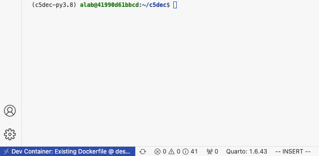
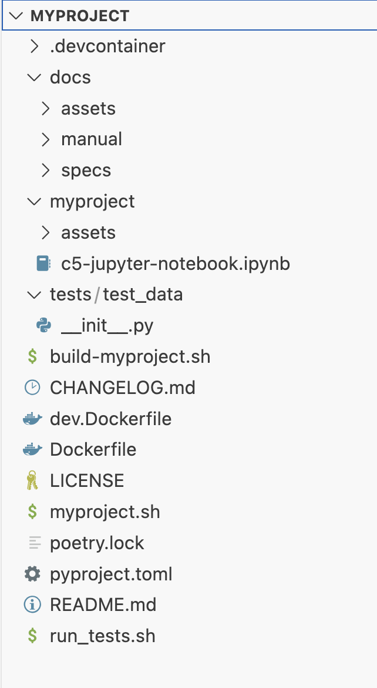
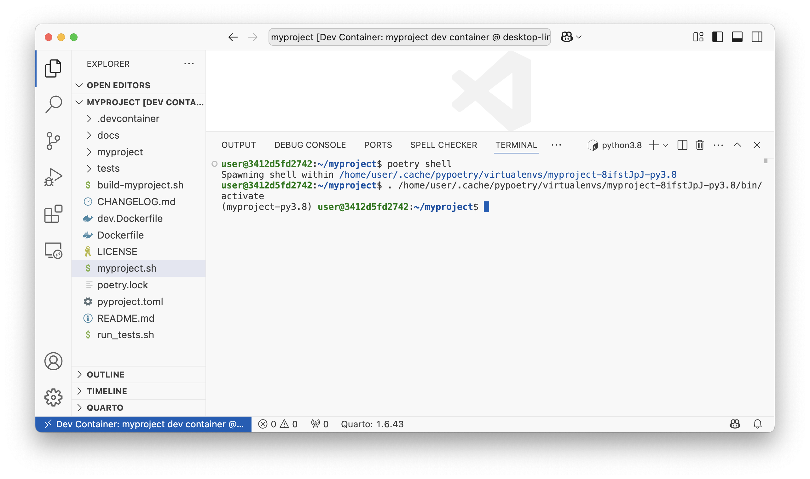

1 TC: Test containerized deployment on x86-64 TSS-001
Test the C5-DEC initialization and setup scripts for containerized deployment.
Preconditions and setup actions
- A device/VM with an x86_64 hardware architecture
- Access to the C5-DEC deployment artifacts
- Docker Engine (or daemon or Docker Desktop) running with the right privileges for the testing user
- Microsoft Visual Studio Code installed (v1.98.2)
- Microsoft VS Code Dev Containers installed, i.e., the VS Code extension (v0.401.0)
Test steps
- Clone this repository:
git clone https://github.com/AbstractionsLab/c5dec.git
- Start Docker Desktop if not already running;
- Open the project folder in VS Code;
- Select the "Reopen in Container" option in the notification that pops up in VS Code; or launch the command palette (Cmd/Ctrl+Shift+P) and select "Dev Containers: Reopen in Container" from the list of available commands. You will then be prompted to select a dev container configuration: the
C5-DEC CAD dev containerprovides the bulk of the functionality, while theC5-DEC CAD cryptography dev containerprovides an environment with OpenSSL and the OQS-OpenSSL provider installed.

- Select the
C5-DEC CAD dev container. Once selected, wait for the container to build and start. This may take a few minutes, depending on your internet connection and the performance of your machine. - Once the container is up and running, you will see a terminal window open in VS Code, and you can start using C5-DEC CAD. If a terminal window does not open automatically, you can open a new terminal by selecting "Terminal" from the top menu and then "New Terminal". This will open a terminal window inside the container, with a Poetry shell activated. If the shell is not automatically activated upon reopening the project in a container, simply run
poetry shell
Expected outcome
- Container creation done successfully, a new VS Code terminal session connecting to the C5-DEC container opened and Python environment via Poetry shell activated, e.g., similar to the view below:

Child links: TRS-001 TCER: containerized deployment x86-64
| Attribute | Value |
|---|---|
| platform | GNU/Linux x86-64 (Dockerized C5-DEC deployment environment) |
| execution_type | Manual |
| verification_method | Test (T) |
| release | stable |
| complexity | 2 |
| test_data | see referenced files |
| version | 1.0 |
2 TC: Test containerized deployment on arm64 TSS-002
Test the C5-DEC initialization and setup scripts for containerized deployment.
Preconditions and setup actions
- A device/VM with an arm64 hardware architecture
- Access to the C5-DEC deployment artifacts
- Docker Engine (or daemon or Docker Desktop) running with the right privileges for the testing user
- Microsoft Visual Studio Code installed (v1.98.2)
- Microsoft VS Code Dev Containers installed, i.e., the VS Code extension (v0.401.0)
Test steps
- Clone this repository:
git clone https://github.com/AbstractionsLab/c5dec.git
- Open the project folder in VS Code;
- Select the "Reopen in Container" option in the notification that pops up in VS Code; or launch the command palette (Cmd/Ctrl+Shift+P) and select "Dev Containers: Reopen in Container" from the list of available commands. You will then be prompted to select a dev container configuration: the
C5-DEC CAD dev containerprovides the bulk of the functionality, while theC5-DEC CAD cryptography dev containerprovides an environment with OpenSSL and the OQS-OpenSSL provider installed.
- Select the
C5-DEC CAD dev container. Once selected, wait for the container to build and start. This may take a few minutes, depending on your internet connection and the performance of your machine. - Once the container is up and running, you will see a terminal window open in VS Code, and you can start using C5-DEC CAD. If a terminal window does not open automatically, you can open a new terminal by selecting "Terminal" from the top menu and then "New Terminal". This will open a terminal window inside the container, with a Poetry shell activated. If the shell is not automatically activated upon reopening the project in a container, simply run
poetry shell
Expected outcome
- Container creation done successfully, a new VS Code terminal session connecting to the C5-DEC container opened and Python environment via Poetry shell activated, e.g., similar to the view below:
Child links: TRS-002 TCER: containerized deployment arm64
| Attribute | Value |
|---|---|
| platform | GNU/Linux arm64 (Dockerized C5-DEC deployment environment) |
| execution_type | Manual |
| verification_method | Test (T) |
| release | stable |
| complexity | 2 |
| test_data | see referenced files |
| version | 1.0 |
3 TC: Test PQ cryptography container TSS-003
Test the C5-DEC cryptography dev container deployment.
Preconditions and setup actions
- Access to the C5-DEC deployment artifacts
- Docker Engine (or daemon or Docker Desktop) running with the right privileges for the testing user
- Microsoft Visual Studio Code installed (v1.98.2)
- Microsoft VS Code Dev Containers installed, i.e., the VS Code extension (v0.401.0)
Test steps
- Clone this repository:
git clone https://github.com/AbstractionsLab/c5dec.git
- Open the project folder in VS Code;
- Select the
C5-DEC cryptography dev container, to create and connect to the OQS-OpenSSL provider, i.e., select the "Reopen in Container" option in the notification that pops up in VS Code; or launch the command palette (Cmd/Ctrl+Shift+P) and select "Dev Containers: Reopen in Container" from the list of available commands. Then, selectC5-DEC cryptography dev container, which provides an environment with OpenSSL and the OQS-OpenSSL provider installed.

This allows you to use post-quantum cryptography algorithms while benefitting from direct access to your host file system, thanks to volume mounting. To use the OQS-OpenSSL provider, we recommend consulting the OQS-OpenSSL usage documentation.
- To get a list of the available quantum-safe signature algorithms, run the following command in the VS Code terminal:
openssl list -signature-algorithms -provider oqsprovider
- To get a list of the available quantum-safe KEM algorithms, run:
openssl list -kem-algorithms -provider oqsprovider
Expected outcome
- The command should return a list of the available quantum-safe signature algorithms:
{ 1.2.840.113549.1.1.1, 2.5.8.1.1, RSA, rsaEncryption } @ default
{ 1.2.840.10040.4.1, 1.3.14.3.2.12, DSA, DSA-old, dsaEncryption, dsaEncryption-old } @ default
{ 1.2.840.10040.4.3, 1.3.14.3.2.27, DSA-SHA, DSA-SHA-1, DSA-SHA1, DSA-SHA1-old, dsaWithSHA, dsaWithSHA1, dsaWithSHA1-old } @ default
{ 1.3.101.112, ED25519 } @ default
{ 1.3.101.113, ED448 } @ default
{ 1.2.156.10197.1.301, SM2 } @ default
{ 2.16.840.1.101.3.4.3.1, DSA-SHA2-224, DSA-SHA224, dsa_with_SHA224 } @ default
{ 2.16.840.1.101.3.4.3.2, DSA-SHA2-256, DSA-SHA256, dsa_with_SHA256 } @ default
{ 1.2.840.1.101.3.4.3.3, DSA-SHA2-384, DSA-SHA384, dsa_with_SHA384, id-dsa-with-sha384 } @ default
{ 1.2.840.1.101.3.4.3.4, DSA-SHA2-512, DSA-SHA512, dsa_with_SHA512, id-dsa-with-sha512 } @ default
{ 2.16.840.1.101.3.4.3.5, DSA-SHA3-224, dsa_with_SHA3-224, id-dsa-with-sha3-224 } @ default
{ 2.16.840.1.101.3.4.3.6, DSA-SHA3-256, dsa_with_SHA3-256, id-dsa-with-sha3-256 } @ default
{ 2.16.840.1.101.3.4.3.7, DSA-SHA3-384, dsa_with_SHA3-384, id-dsa-with-sha3-384 } @ default
{ 2.16.840.1.101.3.4.3.8, DSA-SHA3-512, dsa_with_SHA3-512, id-dsa-with-sha3-512 } @ default
{ 1.3.36.3.3.1.2, ripemd160WithRSA, RSA-RIPEMD160 } @ default
{ 1.2.840.113549.1.1.5, RSA-SHA-1, RSA-SHA1, sha1WithRSAEncryption } @ default
{ 1.2.840.113549.1.1.14, RSA-SHA2-224, RSA-SHA224, sha224WithRSAEncryption } @ default
{ 1.2.840.113549.1.1.11, RSA-SHA2-256, RSA-SHA256, sha256WithRSAEncryption } @ default
{ 1.2.840.113549.1.1.12, RSA-SHA2-384, RSA-SHA384, sha384WithRSAEncryption } @ default
{ 1.2.840.113549.1.1.13, RSA-SHA2-512, RSA-SHA512, sha512WithRSAEncryption } @ default
{ 1.2.840.113549.1.1.15, RSA-SHA2-512/224, RSA-SHA512-224, sha512-224WithRSAEncryption } @ default
{ 1.2.840.113549.1.1.16, RSA-SHA2-512/256, RSA-SHA512-256, sha512-256WithRSAEncryption } @ default
{ 2.16.840.1.101.3.4.3.13, id-rsassa-pkcs1-v1_5-with-sha3-224, RSA-SHA3-224 } @ default
{ 2.16.840.1.101.3.4.3.14, id-rsassa-pkcs1-v1_5-with-sha3-256, RSA-SHA3-256 } @ default
{ 2.16.840.1.101.3.4.3.15, id-rsassa-pkcs1-v1_5-with-sha3-384, RSA-SHA3-384 } @ default
{ 2.16.840.1.101.3.4.3.16, id-rsassa-pkcs1-v1_5-with-sha3-512, RSA-SHA3-512 } @ default
{ 1.2.156.10197.1.504, RSA-SM3, sm3WithRSAEncryption } @ default
ED25519ph @ default
ED25519ctx @ default
ED448ph @ default
ECDSA @ default
{ 1.2.840.10045.4.1, ECDSA-SHA-1, ECDSA-SHA1, ecdsa-with-SHA1 } @ default
{ 1.2.840.10045.4.3.1, ECDSA-SHA2-224, ECDSA-SHA224, ecdsa-with-SHA224 } @ default
{ 1.2.840.10045.4.3.2, ECDSA-SHA2-256, ECDSA-SHA256, ecdsa-with-SHA256 } @ default
{ 1.2.840.10045.4.3.3, ECDSA-SHA2-384, ECDSA-SHA384, ecdsa-with-SHA384 } @ default
{ 1.2.840.10045.4.3.4, ECDSA-SHA2-512, ECDSA-SHA512, ecdsa-with-SHA512 } @ default
{ 2.16.840.1.101.3.4.3.9, ECDSA-SHA3-224, ecdsa_with_SHA3-224, id-ecdsa-with-sha3-224 } @ default
{ 2.16.840.1.101.3.4.3.10, ECDSA-SHA3-256, ecdsa_with_SHA3-256, id-ecdsa-with-sha3-256 } @ default
{ 2.16.840.1.101.3.4.3.11, ECDSA-SHA3-384, ecdsa_with_SHA3-384, id-ecdsa-with-sha3-384 } @ default
{ 2.16.840.1.101.3.4.3.12, ECDSA-SHA3-512, ecdsa_with_SHA3-512, id-ecdsa-with-sha3-512 } @ default
HMAC @ default
SIPHASH @ default
POLY1305 @ default
CMAC @ default
dilithium2 @ oqsprovider
p256_dilithium2 @ oqsprovider
rsa3072_dilithium2 @ oqsprovider
dilithium3 @ oqsprovider
p384_dilithium3 @ oqsprovider
dilithium5 @ oqsprovider
p521_dilithium5 @ oqsprovider
mldsa44 @ oqsprovider
p256_mldsa44 @ oqsprovider
rsa3072_mldsa44 @ oqsprovider
mldsa44_pss2048 @ oqsprovider
mldsa44_rsa2048 @ oqsprovider
mldsa44_ed25519 @ oqsprovider
mldsa44_p256 @ oqsprovider
mldsa44_bp256 @ oqsprovider
mldsa65 @ oqsprovider
p384_mldsa65 @ oqsprovider
mldsa65_pss3072 @ oqsprovider
mldsa65_rsa3072 @ oqsprovider
mldsa65_p256 @ oqsprovider
mldsa65_bp256 @ oqsprovider
mldsa65_ed25519 @ oqsprovider
mldsa87 @ oqsprovider
p521_mldsa87 @ oqsprovider
mldsa87_p384 @ oqsprovider
mldsa87_bp384 @ oqsprovider
mldsa87_ed448 @ oqsprovider
falcon512 @ oqsprovider
p256_falcon512 @ oqsprovider
rsa3072_falcon512 @ oqsprovider
falconpadded512 @ oqsprovider
p256_falconpadded512 @ oqsprovider
rsa3072_falconpadded512 @ oqsprovider
falcon1024 @ oqsprovider
p521_falcon1024 @ oqsprovider
falconpadded1024 @ oqsprovider
p521_falconpadded1024 @ oqsprovider
sphincssha2128fsimple @ oqsprovider
p256_sphincssha2128fsimple @ oqsprovider
rsa3072_sphincssha2128fsimple @ oqsprovider
sphincssha2128ssimple @ oqsprovider
p256_sphincssha2128ssimple @ oqsprovider
rsa3072_sphincssha2128ssimple @ oqsprovider
sphincssha2192fsimple @ oqsprovider
p384_sphincssha2192fsimple @ oqsprovider
sphincsshake128fsimple @ oqsprovider
p256_sphincsshake128fsimple @ oqsprovider
rsa3072_sphincsshake128fsimple @ oqsprovider
mayo1 @ oqsprovider
p256_mayo1 @ oqsprovider
mayo2 @ oqsprovider
p256_mayo2 @ oqsprovider
mayo3 @ oqsprovider
p384_mayo3 @ oqsprovider
mayo5 @ oqsprovider
p521_mayo5 @ oqsprovider
CROSSrsdp128balanced @ oqsprovider
- The command should return a list of the available quantum-safe KEM algorithms:
{ 1.2.840.113549.1.1.1, 2.5.8.1.1, RSA, rsaEncryption } @ default
{ 1.2.840.10045.2.1, EC, id-ecPublicKey } @ default
{ 1.3.101.110, X25519 } @ default
{ 1.3.101.111, X448 } @ default
frodo640aes @ oqsprovider
p256_frodo640aes @ oqsprovider
x25519_frodo640aes @ oqsprovider
frodo640shake @ oqsprovider
p256_frodo640shake @ oqsprovider
x25519_frodo640shake @ oqsprovider
frodo976aes @ oqsprovider
p384_frodo976aes @ oqsprovider
x448_frodo976aes @ oqsprovider
frodo976shake @ oqsprovider
p384_frodo976shake @ oqsprovider
x448_frodo976shake @ oqsprovider
frodo1344aes @ oqsprovider
p521_frodo1344aes @ oqsprovider
frodo1344shake @ oqsprovider
p521_frodo1344shake @ oqsprovider
kyber512 @ oqsprovider
p256_kyber512 @ oqsprovider
x25519_kyber512 @ oqsprovider
kyber768 @ oqsprovider
p384_kyber768 @ oqsprovider
x448_kyber768 @ oqsprovider
x25519_kyber768 @ oqsprovider
p256_kyber768 @ oqsprovider
kyber1024 @ oqsprovider
p521_kyber1024 @ oqsprovider
mlkem512 @ oqsprovider
p256_mlkem512 @ oqsprovider
x25519_mlkem512 @ oqsprovider
mlkem768 @ oqsprovider
p384_mlkem768 @ oqsprovider
x448_mlkem768 @ oqsprovider
X25519MLKEM768 @ oqsprovider
SecP256r1MLKEM768 @ oqsprovider
mlkem1024 @ oqsprovider
p521_mlkem1024 @ oqsprovider
p384_mlkem1024 @ oqsprovider
bikel1 @ oqsprovider
p256_bikel1 @ oqsprovider
x25519_bikel1 @ oqsprovider
bikel3 @ oqsprovider
p384_bikel3 @ oqsprovider
x448_bikel3 @ oqsprovider
bikel5 @ oqsprovider
p521_bikel5 @ oqsprovider
hqc128 @ oqsprovider
p256_hqc128 @ oqsprovider
x25519_hqc128 @ oqsprovider
hqc192 @ oqsprovider
p384_hqc192 @ oqsprovider
x448_hqc192 @ oqsprovider
hqc256 @ oqsprovider
p521_hqc256 @ oqsprovider
Child links: TRS-003 TCER: PQ cryptography container
| Attribute | Value |
|---|---|
| platform | GNU/Linux (Dockerized C5-DEC deployment environment) |
| execution_type | Manual |
| verification_method | Test (T) |
| release | stable |
| complexity | 1 |
| test_data | see referenced files |
| version | 1.0 |
4 TC: Test DocEngine TSS-004
Test the DocEngine compilation of the report template.
Preconditions and setup actions
- Access to the C5-DEC deployment artifacts
- Docker Engine (or daemon or Docker Desktop) running with the right privileges for the testing user
- Microsoft Visual Studio Code installed (v1.98.2)
- Microsoft VS Code Dev Containers installed, i.e., the VS Code extension (v0.401.0)
Test dependencies
- TSS-001 executed successfully
Test steps
- Open a VS Code terminal connecting to the
C5-DEC CAD dev containerand ensure the Poetry shell environment is activated, otherwise runpoetry shell. - Change directory to
c5dec:
cd ~/c5dec
- Run
quarto render ./c5dec/assets/report/index.qmd --to pdf
Expected outcome
- Quarto compilation finished successfully, with all pre and post-rending scripts executed successfully and final PDF file created:
/home/alab/c5dec/c5dec/assets/report/_output/C5-DEC-CAD-DocEngine.pdf.
Child links: TRS-004 TCER: Test DocEngine
| Attribute | Value |
|---|---|
| platform | GNU/Linux (Dockerized C5-DEC deployment environment) |
| execution_type | Manual |
| verification_method | Test (T) |
| release | stable |
| complexity | 1 |
| test_data | see referenced files |
| version | 1.0 |
5 TC: Test the creation of an empty C5-DEC-based project TSS-005
Verify that the c5dec new command creates a project structured in agreement with the C5-DEC model.
Preconditions and setup actions
- Access to the C5-DEC deployment artifacts obtained from the Git repository
- Docker Engine (or daemon or Docker Desktop) running with the right privileges for the testing user
- A terminal running a shell (e.g., bash, zsh)
Test dependencies
- TSS-001 or TSS-002 executed successfully
Test steps
- Go to the C5-DEC project folder. E.g., in the path where C5-DEC was cloned from GitHub:
cd c5dec. - Run
./c5dec.sh new. - Run
lsor equivalent and verify that a zip folder namedmyproject.ziphas been created. - Unzip the file and access its contents (e.g., via a shell command, in a system explorer or in VS Code).
Expected outcome
- The ZIP file
myproject.zipexists at the current path. - The project folder has the structure shown below:

Child links: TRS-005 TCER: creation of empty C5-DEC-based project
| Attribute | Value |
|---|---|
| platform | GNU/Linux, Windows |
| execution_type | Manual |
| verification_method | Test (T), Inspection (I) |
| release | stable |
| complexity | 1 |
| test_data | N/A |
| version | 1.0 |
6 TC: Test build and run of new project via scripts TSS-006
Verify that the scripts of a new project created by c5dec successfully build an image of the new project and can run a default interactive session.
Preconditions
- Access to the C5-DEC deployment artifacts obtained from the Git repository
- Docker Engine (or daemon or Docker Desktop) running with the right privileges for the testing user
- A terminal running a shell (e.g., bash, zsh)
Test dependencies
- TSS-005 executed successfully
Setup actions
To keep a clean separation of the tested artifact, copy or move the unzipped project created during the execution of TSS-005 to a location of your choice outside the C5-DEC project folder. This location will be referred as the test_root folder.
Test steps
- Go to the
test_rootfolder and then tomyproject:cd test_root/myproject - Build the project using the build script:
./build-myproject.sh
- Verify that the images
myproject:v1.0andmyproject-dev:v1.0have been created
docker images
- Run the help menu of the project
./myproject.sh help
- Create a container of the image built in 3 and open an interactive shell.
./myproject.sh session
- Verify that doorstop is installed
doorstop -V
- Exit the container session
exit
Expected outcome
- The command execution finishes showing a log without errors.
- The docker images
myproject-devandmyproject-devwith tagv1.0appear in the list of images. - An informative text with the available commands is shown in the terminal.
- An interactive shell inside a docker container is opened.
Doorstop v3.0b9is shown as the output.- The system shell appears back in the terminal.
Child links: TRS-006 TCER: build and run an empty created project
| Attribute | Value |
|---|---|
| platform | GNU/Linux |
| execution_type | Manual |
| verification_method | Test (T) |
| release | stable |
| complexity | 2 |
| test_data | N/A |
| version | 1.0 |
7 TC: Test new project in VS Code TSS-007
Validate that the empty C5-DEc-based project opens correctly in VS Code.
Preconditions
- Access to the C5-DEC deployment artifacts obtained from the Git repository
- Docker Engine running with the right privileges for the testing user
- Microsoft Visual Studio Code installed (v1.98.2)
- Microsoft VS Code Dev Containers installed, i.e., the VS Code extension (v0.401.0)
Test dependencies
- TSS-005 executed successfully
Setup actions
To keep a clean separation of the tested artifact, copy or move the unzipped project created during the execution of TSS-005 to a location of your choice outside the C5-DEC project folder.
Test steps
- Open
myprojectin VS Code. - Select the "Reopen in Container" option in the notification that pops up. Alternatively, launch the command palette (Cmd/Ctrl+Shift+P) and select "Dev Containers: Reopen in Container" from the list of available commands.
- Open a terminal in VS Code if it none is open and run
poetry shell
- To verify that dependencies are installed, check the version of quarto. You can try other dependencies of your choice (e.g doorstop, kryptor, etc.)
quarto -V
Expected outcome
- A
myprojectshell is created

1.6.43is shown as the output.
Child links: TRS-007 TCER: New project in VS Code
| Attribute | Value |
|---|---|
| platform | GNU/Linux (Dockerized C5-DEC deployment environment) |
| execution_type | Manual |
| verification_method | Test (T) |
| release | stable |
| complexity | 2 |
| test_data | N/A |
| version | 1.0 |